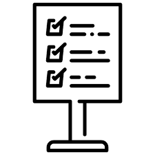

Internal Regualtions
YELE MONEY makes available to the client, hereinafter referred to as "the Client", who accepts and undertakes to comply with the terms and conditions, an electronic money management service, of which BNI is the issuer and for which he has chosen YELE MONEY, for its distribution.
YELE MONEY may refuse at its discretion any request to open an electronic money account, in particular in the event that the proof of identity is not considered satisfactory or if the information provided is not complete and accurate in all respects. The YELE MONEY e-wallet may be closed by decision of YELE MONEY. The Client's electronic wallet is refunded in exchange for cash to be remitted to a partner agent of YELE MONEY.
The YELE MONEY e-wallet is an individual account. A Customer can only have one YELE MONEY wallet. The Client is required to notify YELE MONEY of any change in his personal data communicated at the time of opening a YELE MONEY electronic wallet (age of majority, change of address). The YELE MONEY e-wallet is only and solely intended to receive and store e-money. It may not hold any other securities, securities or financial instruments and no sums of money in any currency whatsoever. Calls, letters or text messages made or received by the Client may be monitored and/or recorded as part of diligent business conduct.

To be able to benefit from the service, the Client must register with the YELE MONEY Agents by filling out the YELE MONEY subscription form or by using the self-enrollment tool from his Smartphone. They will then be asked to create a secret code consisting of four (4) digits that will allow them to make their transactions via a terminal or from the YELE MONEY app. The Client will have to enter this personal and confidential code to validate each transaction to be made. He undertakes to keep it secret and not to communicate it to anyone. The Client will therefore take all appropriate measures to ensure the security of his personal code and YELE MONEY cannot bear any responsibility in this regard. Money transfers and payments made using the Customer's telephone and confirmed by the Client's PIN are irrevocable.

The parties agree that all taxes and duties to which this deed is subject are the responsibility of the client who authorizes YELE MONEY by express agreement to make the necessary deductions for their payments to the Tax Administration whenever they are required. The Client declares that he/she is aware of the current tax regime applicable to banking or financial activities in Côte d'Ivoire.